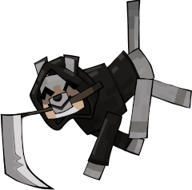

Beat hardcore Minecraft in one day. Hardcore means it's hard mode, plus you can't respawn if you die.

To faciliate this, we have D.U.G. (Discord User Ghostifier) a bot by mousetrinket. D.U.G. kicks you from the voice channel when you die, resulting in perfectly cut screams.
We FAILED last year.
rules
- No mods besides Optifine/Sodium or VR.
- No intentional disconnecting. If you accidentally disconnect, reconnect ASAP. (If you need to pee, hide in a hole.)
- We must reach the End at least as fast as we did in 2024 (5 hrs 33 mins 48 secs). Dawdlers die by command block.
- We go until we slay the Ender Dragon or everyone dies.
- Dead players may not communicate with the living.